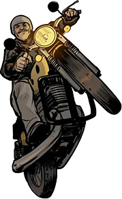

<!--#set var="title" value="Возврат и обмен" -->
<!--#include virtual="/parts/header-back.html" -->

<div class="wrapper fpad50">

    <div class="row fpad50 tpad20">
        <div class="col-lg-6">
            <div class="refund-top-text">
                <h1 class="h2 fpad30">Возврат и обмен</h1>
                <div class="mob-img">
                    
                </div>
                <p>Полные правила возврата и обмена доступны по адресу <br><a href="https://bubble.ru/agreement">https://bubble.ru/agreement</a>
                    в разделе “Возврат и обмен”.</p>
            </div>
            <div class="text">
                <h2>Порядок действий для возврата и обмена Продукции:</h2>

                <p>Возврат денежных средств за отменённые и неотправленные Заказы осуществляется в течение 10 дней после
                    подачи заявки на возврат.</p>
                <p>Возврат денежных средств за уже отправленные Заказы осуществляется без учёта стоимости доставки и
                    только после возвращения товаров обратно на склад Компании после проверки целостности товара.</p>
                <p>Если вам пришла книга с типографским браком, пожалуйста, приложите фото к вашей заявке. Мы можем
                    вернуть вам деньги за Продукцию или обменять её на другую Продукцию идентичной стоимости, если такой
                    товар есть в наличии.</p>
                <p>При получении Заказа обязательно проверяйте целостность Продукции в момент её получения в курьерской
                    службе. Если ваш Заказ пострадал при доставке, не подписывайте Акт приёмки, иначе будет невозможно
                    получить компенсацию за повреждённую при доставке Продукцию. Сфотографируйте повреждённую посылку
                    (упаковку и сам товар со всех сторон) и пришлите нам фото с номером вашего Заказа на рассмотрение
                    претензии. Компания не несёт ответственности за некачественное/ненадлежащее оказание услуг сервисами
                    и службами доставки.</p>
                <p>Возврат Продукции ненадлежащего качества (при наличии в такой Продукции брака) или мерча можно
                    оформить в течение 7 дней с даты получения Заказа.</p>
                <p><b>Для подачи заявки на возврат вам нужно:</b></p>
                <ol>
                    <li>В личном кабинете в разделе “История заказов” выбрать интересующий вас Заказ и нажать на кнопку
                        “Отменить заказ”.
                    </li>
                    <li>После нажатия на кнопку “Отменить заказ” заполнить заявку на возврат.</li>
                    <li>В заявке на возврат необходимо указать следующие данные: номер Заказа, причину возврата, выбрать
                        товары, которые хотите вернуть, и нажать кнопку “отправить/оформить”.
                    </li>
                </ol>
                <p>Заявка на возврат будет рассмотрена в течение 5 рабочих дней, не считая даты подачи заявки. Возврат
                    денежных средств будет осуществлён в течение 10 дней по тем банковским реквизитам, которые были
                    указаны
                    Покупателем при оформлении и оплате Заказа.</p>

                <p>Компания оставляет за собой право осуществить возврат стоимости Продукции без отправки Покупателем
                    заявки на возврат в случае отсутствия аналогичной Продукции.</p>
                <blockquote class="variants2">
                    Обращаем ваше внимание, что любая печатная Продукция (Комиксы - книги, синглы (в т.ч. уценённая по
                    любым
                    причинам Продукция), а также канцелярская Продукция надлежащего качества обмену и возврату <br>НЕ
                    ПОДЛЕЖАТ.
                    <br><br>
                    Равно как возврату не подлежит Электронная версия произведений (Электронные Комиксы - книги, арки,
                    синглы).
                </blockquote>
                <p>В соответствии с Перечнем непродовольственных товаров надлежащего качества, не подлежащих обмену (в
                    соответствии с постановлением Правительства Российской Федерации от 31 декабря 2020 г. N 2463).</p>
            </div>
        </div>
        <div class="col-lg-6 tpad50 hidden-mob">
            <picture>
                <source media="(max-width: 1920px)" srcset="images/dist/refund.jpg">
                <source media="(min-width: 1921px)" srcset="images/dist/refund@2.jpg">
                
            </picture>
        </div>
    </div>
</div>

<!--#include virtual="/parts/footer.html" -->